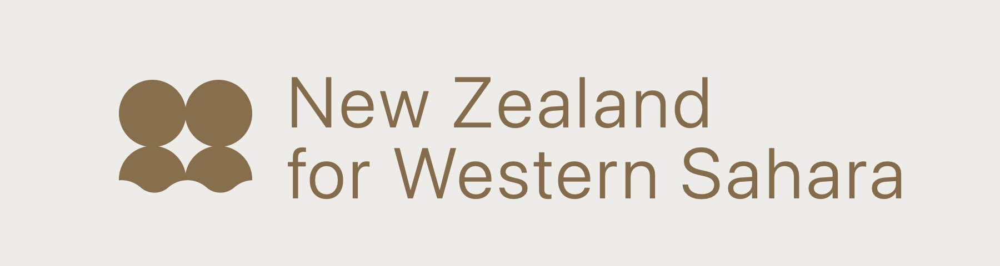

Overview
New Zealand for Western Sahara investigates the phosphate trade linking Western Sahara and Aotearoa New Zealand. The trade—central to New Zealand's agricultural industry—raises questions of settler colonialism, environmental justice, and Indigenous sovereignty.
Developed in collaboration with artist-designer Matthew Galloway, the project examines how visual communication can surface extractive systems that usually remain invisible. Through storytelling, spatial mapping, and advocacy-driven design, the work traces the journey of phosphate from mine to field. By exposing the infrastructures and actors behind this supply chain, it invites viewers to reflect on agricultural complicity in global injustice and to consider solidarity with Saharawi self-determination.

Approach
The project bridges academic research and digital practice. Datasets from NGOs such as Western Sahara Resource Watch were mapped alongside historical and contemporary shipping records. Using custom Mapbox tools, I built interactive maps that animate shipment routes and overlay contextual timelines.
Design functioned here as a tool for advocacy. Audio, protest material, and documentary imagery were embedded within a layered interface, allowing nonlinear exploration that mirrors the fragmented visibility of extractive logistics. The kaupapa of Indigenous design guided the process—centred on relational storytelling, transparency, and resistance rather than detached observation.
Tools
- Geospatial data analysis
- Data visualization
- Web development
- Historical research
Gallery
Parliament talk with Matthew Galloway discussing the impact of phosphate trade routes connecting Western Sahara and New Zealand's agricultural industry.
Interactive map illustrating phosphate trade routes connecting Western Sahara and New Zealand's agricultural industry.